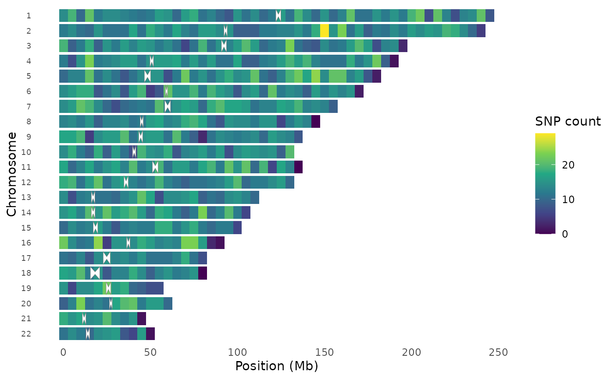
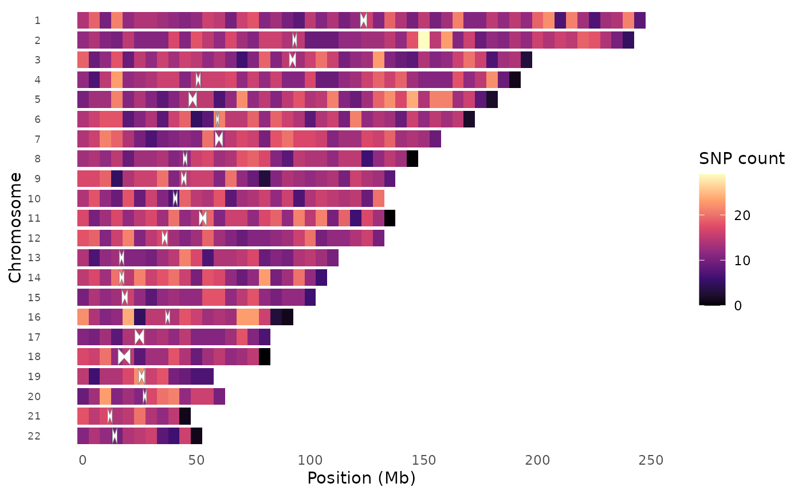
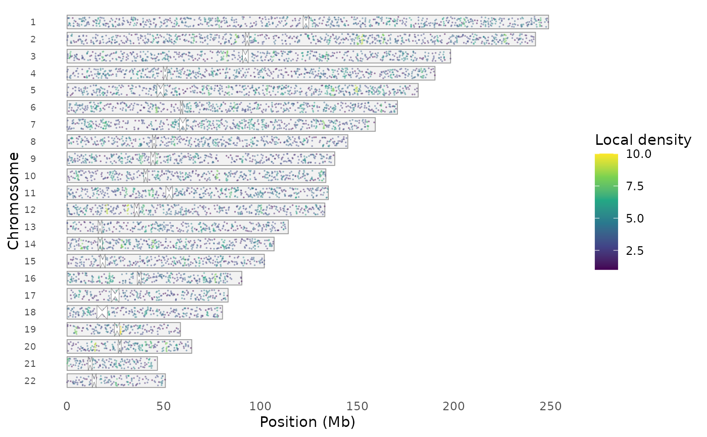
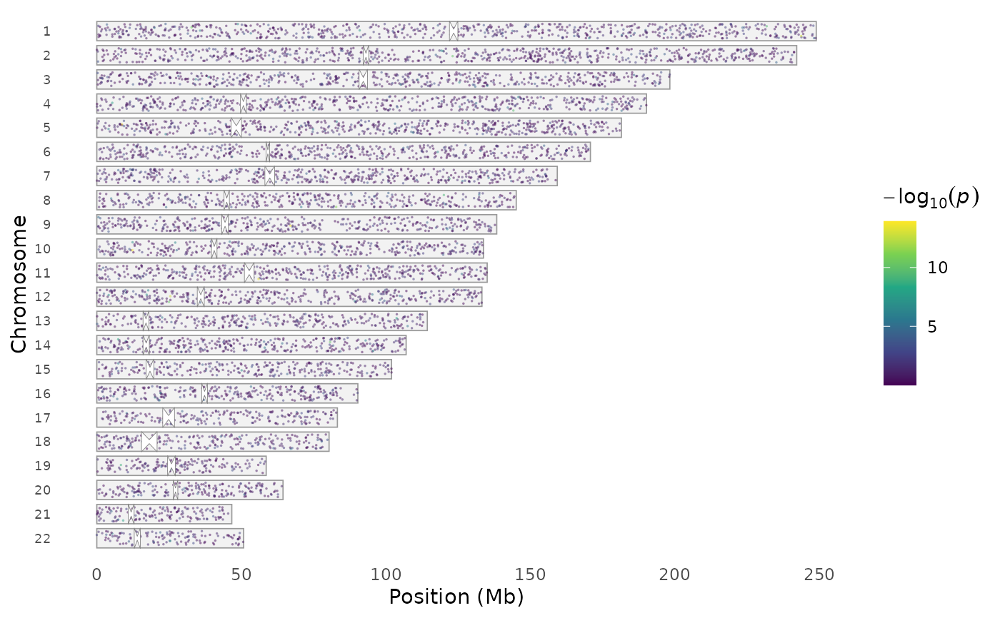
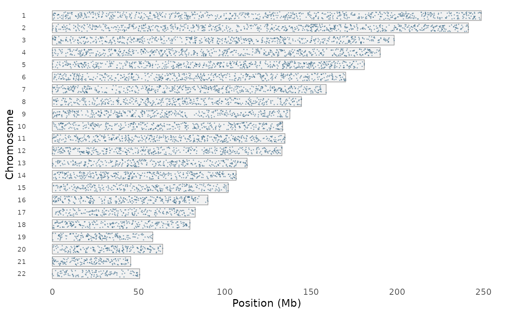

Visualize the distribution of genotyped or imputed variants across
chromosomes. Two rendering styles are available: "heatmap" (default)
bins variants and colors tiles by count, while "points" draws
individual variant positions on chromosome outlines — density is
visible through natural clustering. Optionally marks centromere
positions when chr_info is provided.
Arguments
- data
A
gwas_dataobject or data.frame with GWAS results.- chr, bp, p
Column name overrides.
- style
Rendering style:
"heatmap"for binned density tiles, or"points"for individual variant positions on chromosome outlines.- bin_size
Bin size in base pairs (default 1 Mb). Only used when
style = "heatmap".- color_by
For
style = "points": how to color dots."density"(default) colors by local density,"significance"colors by -log10(p), or"uniform"for a single color.- chr_info
Optional data.frame with columns
chr,length, and optionallycentromere_start,centromere_end. Usechr_info_human()for hg38. If NULL, chromosome lengths are inferred from the data.- palette
Color palette: "viridis", "magma", "inferno", or "plasma".
- point_size
Point size for
style = "points".- point_alpha
Point transparency for
style = "points".- show_centromeres
If TRUE and centromere positions are available in
chr_info, draw centromere markers.- downsample_n
Maximum number of points to plot in
"points"style. Set to NULL to plot all variants (can be slow for >500k).- title
Plot title.
Examples
data(example_gwas, package = "ggwas")
# Heatmap style (default)
snp_density(example_gwas, bin_size = 5e6, chr_info = chr_info_human())

# Different palette
snp_density(example_gwas, bin_size = 5e6, palette = "magma",
chr_info = chr_info_human())

# Points style — individual variants on chromosome outlines
snp_density(example_gwas, style = "points", chr_info = chr_info_human())

# Points colored by significance
snp_density(example_gwas, style = "points", color_by = "significance",
chr_info = chr_info_human())

# Uniform color, no centromeres
snp_density(example_gwas, style = "points", color_by = "uniform",
show_centromeres = FALSE)
